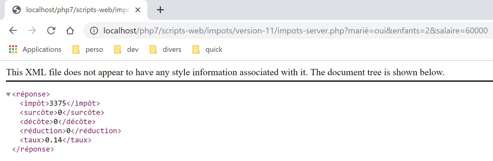
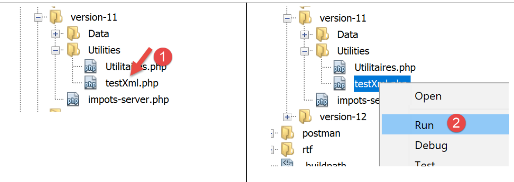
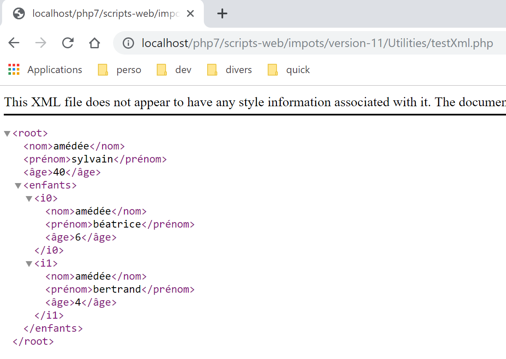
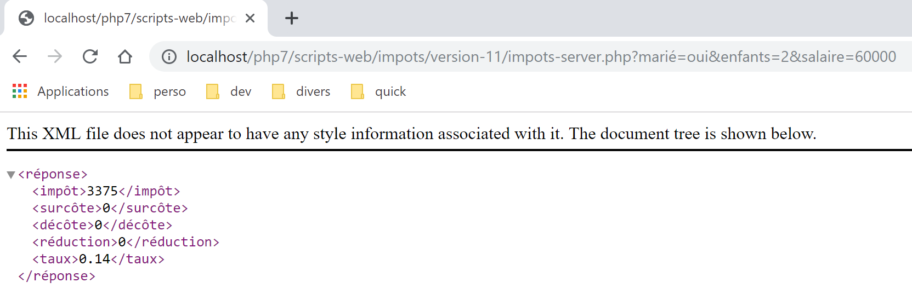
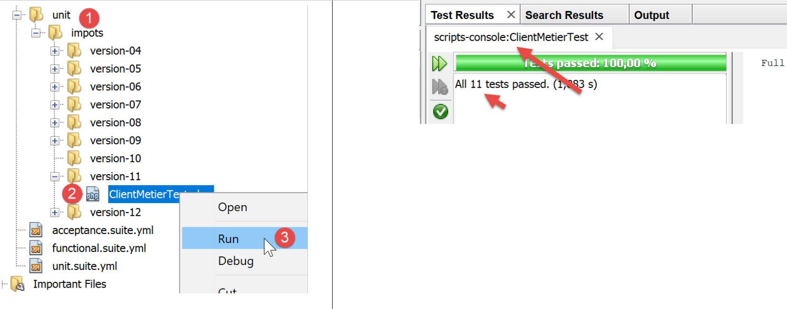

22. 应用练习 – 第 11 版
目前，Web 服务仍常以 XML 流的形式发送响应，而非 jSON 流：
- jSON 数据流更为精简，但需要参考说明才能理解；
- XML 数据流虽然冗长，但具有自文档特性，可立即理解；
我们将客户端/服务器版本 11 进行了修改，使服务器现在向客户端发送 XML 数据流作为响应：

22.1. 服务器

该架构将通过以下脚本实现：

22.1.1. [Utilitaires]类
我们沿用了自 03 版起使用的 [Utilitaires] 类（参见链接段落）：
<?php
// 命名空间
namespace Application;
// 一个实用函数类
abstract class Utilitaires {
public static function cutNewLinechar(string $ligne): string {
…
}
// 来自 https://stackoverflow.com/questions/1397036/how-to-convert-array-to-simplexml
public static function getXmlForArrayOfAttributes(array $arrayOfAttributes,
\SimpleXmlElement &$node): void {
// 扫描数组的属性
foreach ($arrayOfAttributes as $attribute => $value) {
// 该属性是数值型吗？
if (is_numeric($attribute)) {
// 数组索引的情况（但也包括其他情况）
$attribute = 'i' . $attribute;
}
// $value 是否为数组？
if (is_array($value)) {
// 接下来我们将探索数组 [$value]
// 向图 XML 添加一个节点
$subnode = $node->addChild($attribute);
// 通过递归调用探索数组 [$value]
Utilitaires::getXmlForArrayOfAttributes($value, $subnode);
} else {
// 将该节点添加到图中 XML
$node->addChild("$attribute", htmlspecialchars("$value"));
}
}
}
}
注释
- 第 14-36 行：我们引入静态方法 [getXmlForArrayOfAttributes]，该方法将作为参数传递的数组 [arrayOfAttributes] 中的字符串 XML 返回。 第二个参数是图 XML 中某个节点的引用，该节点类型为 [SimpleXmlElement]。 执行后，该节点将包含数组 [arrayOfAttributes] 中的图 XML；
我们编写以下测试用例 [testXml.php]：

<?php
// 依赖关系
require __DIR__ . "/Utilitaires.php";
// 关联数组
$array = ["nom" => "amédée", "prénom" => "sylvain", "âge" => 40,
"enfants" => [["nom" => "amédée", "prénom" => "béatrice", "âge" => 6],
["nom" => "amédée", "prénom" => "bertrand", "âge" => 4]]];
// xml
header("Content-Type: application/xml");
$node = new \SimpleXMLElement("<?xml version='1.0' encoding='UTF-8'?><root></root>");
\Application\Utilitaires::getXmlForArrayOfAttributes($array, $node);
print $node->asXML();
当执行此脚本 [2] 时，我们在 Chrome 浏览器中得到以下结果：

22.1.2. 服务器脚本
需修改服务器脚本 [impots-server.php] 及其配置文件 [config-server.json]：
{
"rootDirectory": "C:/myprograms/laragon-lite/www/php7/scripts-web/impots/version-11",
"databaseFilename": "Data/database.json",
"relativeDependencies": [
"/../version-08/Entities/BaseEntity.php",
"/../version-08/Entities/ExceptionImpots.php",
"/../version-08/Entities/TaxAdminData.php",
"/../version-08/Entities/Database.php",
"/../version-08/Dao/InterfaceServerDao.php",
"/../version-08/Dao/ServerDao.php",
"/../version-09/Dao/ServerDaoWithSession.php",
"/../version-08/Métier/InterfaceServerMetier.php",
"/../version-08/Métier/ServerMetier.php",
"/../version-09/Utilities/Logger.php",
"/../version-09/Utilities/SendAdminMail.php",
"/Utilities/Utilitaires.php"
],
"absoluteDependencies": [
"C:/myprograms/laragon-lite/www/vendor/autoload.php",
"C:/myprograms/laragon-lite/www/vendor/predis/predis/autoload.php"
],
"users": [
{
"login": "admin",
"passwd": "admin"
}
],
"adminMail": {
"smtp-server": "localhost",
"smtp-port": "25",
"from": "guest@localhost",
"to": "guest@localhost",
"subject": "plantage du serveur de calcul d'impôts",
"tls": "FALSE",
"attachments": []
},
"logsFilename": "Data/logs.txt"
}
注释
- 项目的根目录现为版本 11 的文件夹；
- 第 16 行：引入了新类 [Utilitaires]；
服务器脚本的修改如下：
<?php
// 严格遵守函数参数的声明类型
declare (strict_types=1);
// 命名空间
namespace Application;
…
// 准备服务器的响应 JSON
$response = new Response();
$response->headers->set("content-type", "application/xml");
$response->setCharset("utf-8");
…
// 创建 [métier] 层
$métier = new ServerMetier($dao);
// 计算税款
$result = $métier->calculerImpot($marié, (int) $enfants, (int) $salaire);
// 返回响应
sendResponse($response, $result, Response::HTTP_OK, [], $logger, $redis);
// 结束
exit;
function doInternalServerError(string $message, Response $response, array $infos,
…
}
// 向客户发送响应 HTTP 的功能
function sendResponse(Response $response, array $result, int $statusCode,
array $headers, Logger $logger = NULL, \Predis\Client $predisClient = NULL) {
// $response：响应 HTTP
// $result：结果表
// $statusCode：响应状态 HTTP
// $headers：应放入响应中的HTTP标头
// $logger：应用程序日志记录器
// $predisClient：一个客户端 [predis]
//
// 状态 HTTTP
$response->setStatusCode($statusCode);
// 正文 XML
$node = new \SimpleXMLElement("<?xml version='1.0' encoding='UTF-8'?><réponse></réponse>");
Utilitaires::getXmlForArrayOfAttributes($result, $node);
$response->setContent($node->asXML());
// 头部
$response->headers->add($headers);
// 发送
$response->send();
// 日志
if ($logger != NULL) {
// 日志jSON
$log = \json_encode(["réponse" => $result], JSON_UNESCAPED_UNICODE);
$logger->write("$log\n");
$logger->close();
}
// 关闭连接 [redis]
if ($predisClient != NULL) {
$predisClient->disconnect();
}
}
注释
- 第 12 行：指定响应类型为 [application/xml]；
- 第29-59行：服务器响应现为XML；
- 第 41 行：创建图 XML 的根节点 [<réponse></réponse>]；
- 第 42 行：将该图与待发送给客户端的结果表 [$result] 中的图 XML 合并；
- 第43行：将图XML转换为字符串XML，以便发送给客户端；
测试
直接在 Chrome 浏览器中输入 URL [http://localhost/php7/scripts-web/impots/version-11/impots-server.php?mari%C3%A9=oui&enfants=2&salaire=60000]。在 Chrome 浏览器中得到以下结果 [1]：

22.2. 客户端
现在我们关注应用程序的客户端部分。

该架构将通过以下脚本实现：

在新版本中，仅以下内容发生变更：
- 配置文件 [config-client.json]；
- 客户端的 [dao] 层；
配置文件 [config-client.json] 变为如下内容：
{
"rootDirectory": "C:/Data/st-2019/dev/php7/poly/scripts-console/impots/version-11",
"taxPayersDataFileName": "Data/taxpayersdata.json",
"resultsFileName": "Data/results.json",
"errorsFileName": "Data/errors.json",
"dependencies": [
"/../version-08/Entities/BaseEntity.php",
"/../version-08/Entities/TaxPayerData.php",
"/../version-08/Entities/ExceptionImpots.php",
"/../version-08/Utilities/Utilitaires.php",
"/../version-08/Dao/InterfaceClientDao.php",
"/../version-08/Dao/TraitDao.php",
"/Dao/ClientDao.php",
"/../version-08/Métier/InterfaceClientMetier.php",
"/../version-08/Métier/ClientMetier.php"
],
"absoluteDependencies": [
"C:/myprograms/laragon-lite/www/vendor/autoload.php"
],
"user": {
"login": "admin",
"passwd": "admin"
},
"urlServer": "https://localhost:443/php7/scripts-web/impots/version-11/impots-server.php"
}
22.2.1. [dao] 层
客户端 [ClientDao.php]（上文第 13 行）已修改以适应新的响应格式。使用 [simpleXML] 来处理该响应：
<?php
namespace Application;
// 依赖项
use \Symfony\Component\HttpClient\HttpClient;
class ClientDao implements InterfaceClientDao {
// 使用一个 Trait
use TraitDao;
// 属性
private $urlServer;
private $user;
private $sessionCookie;
// 构造函数
public function __construct(string $urlServer, array $user) {
$this->urlServer = $urlServer;
$this->user = $user;
}
// 税额计算
public function calculerImpot(string $marié, int $enfants, int $salaire): array {
…
// 获取响应XML
$réponse = $response->getContent(false);
$xml = new \SimpleXMLElement($réponse);
// 日志
// 打印 "$réponse\n";
// 获取响应状态
$statusCode = $response->getStatusCode();
// 错误？
if ($statusCode !== 200) {
// 出现错误 - 抛出异常
$message = \json_encode(["statut HTTP" => $statusCode, "réponse" => $xml], JSON_UNESCAPED_UNICODE);
throw new ExceptionImpots($message);
}
if (!$this->sessionCookie) {
// 获取会话cookie
$headers = $response->getHeaders();
if (isset($headers["set-cookie"])) {
// 会话cookie？
foreach ($headers["set-cookie"] as $cookie) {
$match = [];
$match = preg_match("/^PHPSESSID=(.+?);/", $cookie, $champs);
if ($match) {
$this->sessionCookie = "PHPSESSID=" . $champs[1];
}
}
}
}
// 以数组形式返回响应
return \json_decode(\json_encode($xml, JSON_UNESCAPED_UNICODE), true);
}
}
注释
- 第 26-27 行：读取服务器响应。这是一个 XML [<réponse>…</réponse>] 文档。根据接收到的 XML 文档构建一个 [SimpleXMLElement] 对象；
- 第33-37行：若发生错误，异常消息将采用服务器响应中的字符串 jSON，而非收集到的字符串 XML。实际上，字符串 jSON 更为简洁；
- 第 53 行：分两步返回结果数组：
- 类型为 [\SimpleXMLElement] 的对象 [$xml] 被转换为 jSON；
- 将得到的字符串 jSON 转换为关联数组。这就是要返回的结果；
测试
如果在正确的环境（数据库、身份验证、日志）下启动客户端，将获得常规结果（请检查文件 [taxpayersdata.json, results.txt, errors.json]）。在服务器端，日志如下：
06/07/19 07:41:32:877 :
---nouvelle requête
06/07/19 07:41:32:882 : Autentification en cours…
06/07/19 07:41:32:883 : Authentification réussie [admin, admin]
06/07/19 07:41:32:883 : paramètres ['marié'=>oui, 'enfants'=>2, 'salaire'=>55555] valides
06/07/19 07:41:32:908 : données fiscales prises en base de données
06/07/19 07:41:32:959 : {"réponse":{"impôt":2814,"surcôte":0,"décôte":0,"réduction":0,"taux":0.14}}
06/07/19 07:41:33:070 :
---nouvelle requête
06/07/19 07:41:33:077 : Authentification prise en session…
06/07/19 07:41:33:077 : paramètres ['marié'=>oui, 'enfants'=>2, 'salaire'=>50000] valides
06/07/19 07:41:33:099 : données fiscales prises dans redis
06/07/19 07:41:33:100 : {"réponse":{"impôt":1384,"surcôte":0,"décôte":384,"réduction":347,"taux":0.14}}
06/07/19 07:41:33:189 :
---nouvelle requête
06/07/19 07:41:33:202 : Authentification prise en session…
06/07/19 07:41:33:202 : paramètres ['marié'=>oui, 'enfants'=>3, 'salaire'=>50000] valides
06/07/19 07:41:33:233 : données fiscales prises dans redis
06/07/19 07:41:33:233 : {"réponse":{"impôt":0,"surcôte":0,"décôte":720,"réduction":0,"taux":0.14}}
06/07/19 07:41:33:318 :
…
22.2.2. 测试 [Codeception]

测试 [ClientMetierTest] 如下：
<?php
// 严格遵守函数参数的声明类型
declare (strict_types=1);
// 命名空间
namespace Application;
// 常量定义
define("ROOT", "C:/Data/st-2019/dev/php7/poly/scripts-console/impots/version-11");
// 配置文件路径
define("CONFIG_FILENAME", ROOT . "/Data/config-client.json");
// 读取配置
$config = \json_decode(file_get_contents(CONFIG_FILENAME), true);
…
// 测试类
class ClientMetierTest extends Unit {
// 业务层
private $métier;
public function __construct() {
parent::__construct();
// 加载配置
$config = \json_decode(\file_get_contents(CONFIG_FILENAME), true);
// 创建 [dao] 层
$clientDao = new ClientDao($config["urlServer"], $config["user"]);
// 创建层[métier]
$this->métier = new ClientMetier($clientDao);
}
// 测试
…
}
测试结果如下：
